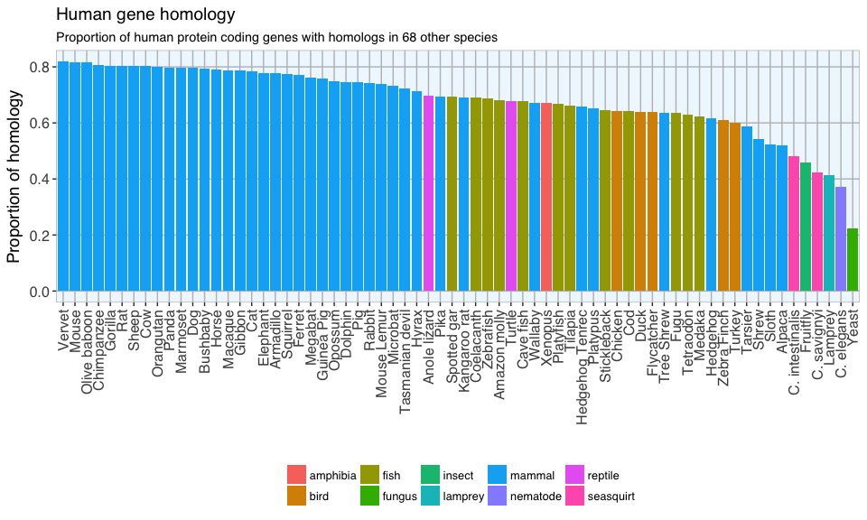
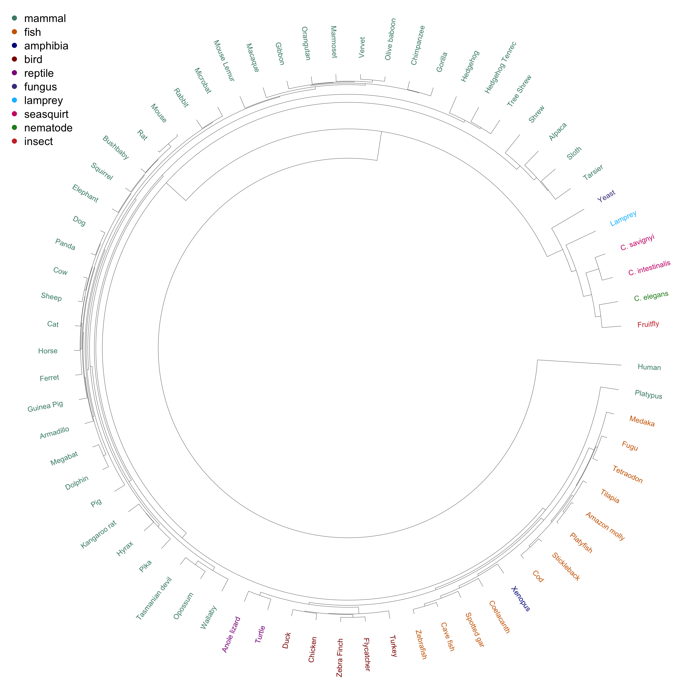
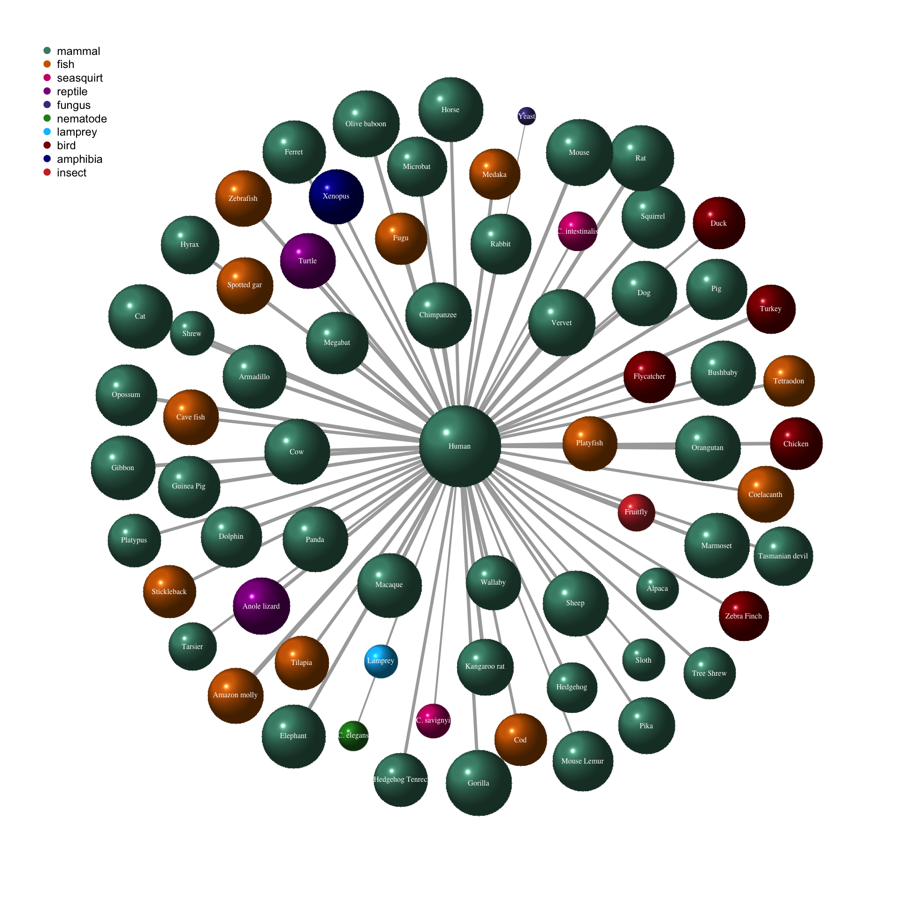

Creating a network of human gene homology with R and D3
Edited on 20 December 2016
This week I want to explore how many of our human genes have homologs in other species. I will use this question to show how to visualize dendrograms and (D3-) networks.
Here, I am looking at gene homologs for all genes of the human genome. In Part 2 I am creating a full network between a subset of the species from this post.
Accessing species information from Biomart
I am using the biomaRt package to access all datasets available in the Biomart Ensembl database. The listDatasets() function shows that currently there is data for 69 species (including humans). This dataframe gives us the name of each dataset in Biomart Ensembl, the respective common species name and version number.
library(biomaRt)
ensembl = useMart("ensembl")
datasets <- listDatasets(ensembl)
human = useMart("ensembl", dataset = "hsapiens_gene_ensembl")
I am then looping over each species to call useMart() and assign an object to each species’ Ensembl database.
for (i in 1:nrow(datasets)) {
ensembl <- datasets[i, 1]
assign(paste0(ensembl), useMart("ensembl", dataset = paste0(ensembl)))
}
specieslist <- datasets$dataset
Identifying human gene homologs
Protein coding genes
The majority of human genes are protein coding genes. This means that their DNA sequence will be translated into a protein with specific cellular functions. For an overview of all gene biotypes in the human genome, have a look at this previous post.
To identify all protein coding genes in the human genome, I am using AnnotationDbi and the EnsDb.Hsapiens.v79 database.
library(AnnotationDbi)
library(EnsDb.Hsapiens.v79)
# get all Ensembl gene IDs
human_EnsDb <- keys(EnsDb.Hsapiens.v79, keytype = "GENEID")
# get the biotype of each gene ID
human_gene_EnsDb <- ensembldb::select(EnsDb.Hsapiens.v79, keys = human_EnsDb, columns = "GENEBIOTYPE", keytype = "GENEID")
# and keep only protein coding genes
human_prot_coding_genes <- human_gene_EnsDb[which(human_gene_EnsDb$GENEBIOTYPE == "protein_coding"), ]
To get a dataframe of human genes and their homologs in other species, I am looping over all Biomart Ensembl databases using biomaRt’s getLDS() function. getLDS() links two datasets and is equivalent to homology mapping with Ensembl. I am also including the human database so that I can see how many genes from EnsDb.Hsapiens.v79 are found via Biomart.
for (species in specieslist) {
print(species)
assign(paste0("homologs_human_", species), getLDS(attributes = c("ensembl_gene_id", "chromosome_name"),
filters = "ensembl_gene_id",
values = human_prot_coding_genes$GENEID,
mart = human,
attributesL = c("ensembl_gene_id", "chromosome_name"),
martL = get(species)))
}
Based on EnsDb.Hsapiens.v79 protein coding genes, I now have 69 individual datasets with homologous genes found in other species. I now want to combine these 69 datasets into one cooccurrence matrix. To do this, I am first joining the homologous gene subsets back to the original dataframe with all protein coding genes. Then, I convert existing homologous gene names to 1 and NAs to 0. These, I then merge into one table. This final table now contains the information whether each gene has a homolog in each of the other species (“1”) or not (“0”).
library(dplyr)
for (i in 1:length(specieslist)){
species <- specieslist[i]
homologs_human <- left_join(human_prot_coding_genes, get(paste0("homologs_human_", species)), by = c("GENEID" = "Gene.ID"))
homologs_human[, paste0(species)] <- ifelse(is.na(homologs_human$Gene.ID.1), 0, 1)
homologs_human <- homologs_human[, c(1, 6)]
homologs_human <- homologs_human[!duplicated(homologs_human$GENEID), ]
if (i == 1){
homologs_human_table <- homologs_human
} else {
homologs_human_table <- left_join(homologs_human_table, homologs_human, by = "GENEID")
}
}
I only want to keep the 21,925 human genes found via Biomart (77 genes were not found).
homologs_human_table <- homologs_human_table[which(homologs_human_table[, grep("sapiens", colnames(homologs_human_table))] == 1), ]
The final steps to creating a cooccurrence matrix are
- removing the column with Ensembl gene IDs (because we have the Homo sapiens column from Biomart),
- multiplying with the transposed matrix and
- setting all rows and columns which don’t show cooccurrences with humans to 0 (because I only looked at homology from the human perspective).
gene_matrix <- homologs_human_table[, -1]
co_occurrence <- t(as.matrix(gene_matrix)) %*% as.matrix(gene_matrix)
co_occurrence[-grep("sapiens", rownames(co_occurrence)), -grep("sapiens", colnames(co_occurrence))] <- 0
The first information I want to extract from this data is how many and what proportion of human genes had a homolog in each of the other species.
genes <- data.frame(organism = colnames(gene_matrix),
number_genes = colSums(gene_matrix),
proportion_human_genes = colSums(gene_matrix)/nrow(homologs_human_table))
I also want to know which species are similar regarding the gene homology they share with humans. This, I will visualize with a hierarchical clustering dendrogram using the dendextend and circlize packages.
Before I can produce plots however, I want to create annotation attributes for each species:
- their common name (because most people won’t know off the top of their heads what species T. nigroviridis is) and
- a grouping attribute, e.g. mammal, fish, bird, etc.
In order to have the correct order of species, I create the annotation dataframe based off the dendrogram.
Most of the common names I can extract from the list of Biomart Ensembl datasets but a few I have to change manually.
library(dendextend)
library(circlize)
# create a dendrogram
h <- hclust(dist(scale(as.matrix(t(gene_matrix))), method = "manhattan"))
dend <- as.dendrogram(h)
library(dplyr)
labels <- as.data.frame(dend %>% labels) %>%
left_join(datasets, by = c("dend %>% labels" = "dataset")) %>%
left_join(genes, by = c("dend %>% labels" = "organism"))
labels[, 2] <- gsub("(.*)( genes (.*))", "\\1", labels[, 2])
labels$group <- c(rep("mammal", 2), rep("fish", 8), "amphibia", rep("fish", 4), rep("bird", 5), rep("reptile", 2), rep("mammal", 41), "fungus", "lamprey", rep("seasquirt", 2), "nematode", "insect")
labels$description[grep("hedgehog", labels$description)] <- "Hedgehog Tenrec"
labels$description[grep("Saccharomyces", labels$description)] <- "Yeast"
labels$description[grep("savignyi", labels$description)] <- "C. savignyi"
labels$description[grep("intestinalis", labels$description)] <- "C. intestinalis"
labels$description[grep("elegans", labels$description)] <- "C. elegans"
labels$description[grep("turtle", labels$description)] <- "Turtle"
labels$description[grep("Vervet", labels$description)] <- "Vervet"
The first plot shows the proportion of human genes with a homolog in each of the other species.
library(ggplot2)
my_theme <- function(base_size = 12, base_family = "sans"){
theme_grey(base_size = base_size, base_family = base_family) +
theme(
axis.text = element_text(size = 12),
axis.text.x = element_text(angle = 90, vjust = 0.5, hjust = 1),
axis.title = element_text(size = 14),
panel.grid.major = element_line(color = "grey"),
panel.grid.minor = element_blank(),
panel.background = element_rect(fill = "aliceblue"),
strip.background = element_rect(fill = "lightgrey", color = "grey", size = 1),
strip.text = element_text(face = "bold", size = 12, color = "navy"),
legend.position = "bottom",
legend.background = element_blank(),
panel.margin = unit(.5, "lines"),
panel.border = element_rect(color = "grey", fill = NA, size = 0.5)
)
}
labels_p <- labels[-1, ]
f = as.factor(labels_p[order(labels_p$proportion_human_genes, decreasing = TRUE), "description"])
labels_p <- within(labels_p, description <- factor(description, levels = f))
ggplot(labels_p, aes(x = description, y = proportion_human_genes, fill = group)) +
geom_bar(stat = "identity") +
my_theme() +
labs(
x = "",
y = "Proportion of homology",
fill = "",
title = "Human gene homology",
subtitle = "Proportion of human protein coding genes with homologs in 68 other species"
)

As expected, the highest proportions of homologous genes are found between humans and most other mammals: between 81 and 70% of our genes have a homolog in most mammals. The lowest proportion of homologous genes are found in yeast, but even such a simply organism shares more than 20% of its genes with us. Think about that the next time you enjoy a delicious freshly baked bread or drink a nice cold glass of beer…
However, based on these Biomart Ensembl databases, more of our genes have a homolog in mice than in primates. I would have expected primates to come out on top, but what we see here might be confounded by the different amounts of information we have on species’ genomes and the accuracy of this information: there has been more research done on the mouse than e.g. on the alpaca. We therefore have more and more accurate information on the mouse genome and have identified more homologous genes than in other species.
For plotting the dendrograms, I am adding a column with color specifications for each group to the annotation table.
labels$col <- c(rep("aquamarine4", 2), rep("darkorange3", 8), "blue4", rep("darkorange3", 4), rep("darkred", 5), rep("darkmagenta", 2), rep("aquamarine4", 41), "darkslateblue", "deepskyblue1", rep("deeppink3", 2), "forestgreen", "brown3")
This dendrogram shows the hierarchical clustering of human gene homology with 68 other species. The species are grouped by color (see legend).
labels(dend) <- labels$description
dend %>%
set("labels_col", labels$col) %>%
set("labels_cex", 2) %>%
circlize_dendrogram(labels_track_height = NA, dend_track_height = 0.3)
legend("topleft", unique(labels$group), pch = 19,
col = unique(labels$col), pt.cex = 3, cex = 3, bty = "n", ncol = 1)

The most distant group from all other species include yeast, fruit fly, lamprey, C. elegans and the two seasquirt species, followed by tarsier, alpaca, sloth and shrew. The next group includes the fish, reptiles, amphibiens, birds and the platypus. Interestingly, the platypus the Xenopus are more similar to fish than to birds and reptiles.
And finally, we have the remaining mammals: here, the primates cluster nicely together.
In order to show the homology between human genes with the other species, we can also plot a network. The 2D-network is created from the cooccurrence matrix with node size and edge width representing the proportion of homology and colors depicting the species’ group.
# plot the network graph
library(igraph)
g <- graph_from_adjacency_matrix(co_occurrence,
weighted = TRUE,
diag = FALSE,
mode = "undirected")
g <- simplify(g, remove.multiple = F, remove.loops = T, edge.attr.comb = c(weight = "sum", type = "ignore"))
labels_2 <- labels[match(rownames(co_occurrence), labels[, 1]), ]
V(g)$color <- labels_2$col
V(g)$label <- labels_2$description
V(g)$size <- labels_2$proportion_human_genes*25
E(g)$arrow.size <- 0.2
E(g)$edge.color <- "gray80"
E(g)$width <- labels_2$proportion_human_genes*10
plot(g,
vertex.label.font = 1,
vertex.shape = "sphere",
vertex.label.cex = 1,
vertex.label.color = "white",
vertex.frame.color = NA)
legend("topleft", unique(labels_2$group), pch = 19,
col = unique(labels_2$col), pt.cex = 2, cex = 1.5, bty = "n", ncol = 1)

Another nice way to visualize networks is to create a D3 JavaScript network graph with the networkD3 package. It shows the same information as the 2D-network above but here you can interact with the nodes, which makes the species names easier to read.
library(networkD3)
net_d3 <- igraph_to_networkD3(g, group = labels_2$group)
net_d3$nodes <- merge(net_d3$nodes, genes, by.x = "name", by.y = "row.names")
net_d3$nodes$proportion_human_genes <- net_d3$nodes$proportion_human_genes
net_d3$nodes <- merge(net_d3$nodes, labels_2[, 1:2], by.x = "name", by.y = "dend %>% labels")
net_d3$nodes[, 1] <- net_d3$nodes$description
net_d3$nodes <- net_d3$nodes[match(labels_2[, 1], net_d3$nodes$organism), ]
# Create force directed network plot
forceNetwork(Links = net_d3$links,
Nodes = net_d3$nodes,
Nodesize = "proportion_human_genes",
radiusCalculation = JS(" Math.sqrt(d.nodesize)*15"),
linkDistance = 100,
zoom = TRUE,
opacity = 0.9,
Source = 'source',
Target = 'target',
linkWidth = networkD3::JS("function(d) { return d.value/5; }"),
bounded = FALSE,
colourScale = JS("d3.scale.category10()"),
NodeID = 'name',
Group = 'group',
fontSize = 10,
charge = -200,
opacityNoHover = 0.7)
Click to open the interactive network and use the mouse to zoom and turn the plot:
## R version 3.3.2 (2016-10-31)
## Platform: x86_64-apple-darwin13.4.0 (64-bit)
## Running under: macOS Sierra 10.12
##
## locale:
## [1] de_DE.UTF-8/de_DE.UTF-8/de_DE.UTF-8/C/de_DE.UTF-8/de_DE.UTF-8
##
## attached base packages:
## [1] parallel stats4 stats graphics grDevices utils datasets
## [8] methods base
##
## other attached packages:
## [1] networkD3_0.2.13 igraph_1.0.1
## [3] ggplot2_2.2.0 dplyr_0.5.0
## [5] circlize_0.3.9 dendextend_1.3.0
## [7] EnsDb.Hsapiens.v79_1.1.0 ensembldb_1.6.0
## [9] GenomicFeatures_1.26.0 GenomicRanges_1.26.0
## [11] GenomeInfoDb_1.10.0 AnnotationDbi_1.36.0
## [13] IRanges_2.8.0 S4Vectors_0.12.0
## [15] Biobase_2.34.0 BiocGenerics_0.20.0
## [17] biomaRt_2.30.0
##
## loaded via a namespace (and not attached):
## [1] httr_1.2.1 jsonlite_1.1
## [3] AnnotationHub_2.6.0 shiny_0.14.2
## [5] assertthat_0.1 interactiveDisplayBase_1.12.0
## [7] Rsamtools_1.26.0 yaml_2.1.14
## [9] robustbase_0.92-6 RSQLite_1.0.0
## [11] lattice_0.20-34 digest_0.6.10
## [13] XVector_0.14.0 colorspace_1.3-1
## [15] htmltools_0.3.5 httpuv_1.3.3
## [17] Matrix_1.2-7.1 plyr_1.8.4
## [19] XML_3.98-1.5 zlibbioc_1.20.0
## [21] xtable_1.8-2 mvtnorm_1.0-5
## [23] scales_0.4.1 whisker_0.3-2
## [25] BiocParallel_1.8.0 tibble_1.2
## [27] SummarizedExperiment_1.4.0 nnet_7.3-12
## [29] lazyeval_0.2.0 magrittr_1.5
## [31] mime_0.5 mclust_5.2
## [33] evaluate_0.10 MASS_7.3-45
## [35] class_7.3-14 BiocInstaller_1.24.0
## [37] tools_3.3.2 GlobalOptions_0.0.10
## [39] trimcluster_0.1-2 stringr_1.1.0
## [41] kernlab_0.9-25 munsell_0.4.3
## [43] cluster_2.0.5 fpc_2.1-10
## [45] Biostrings_2.42.0 grid_3.3.2
## [47] RCurl_1.95-4.8 htmlwidgets_0.8
## [49] bitops_1.0-6 labeling_0.3
## [51] rmarkdown_1.1 gtable_0.2.0
## [53] flexmix_2.3-13 DBI_0.5-1
## [55] R6_2.2.0 GenomicAlignments_1.10.0
## [57] knitr_1.15 prabclus_2.2-6
## [59] rtracklayer_1.34.0 shape_1.4.2
## [61] modeltools_0.2-21 stringi_1.1.2
## [63] Rcpp_0.12.8 DEoptimR_1.0-8
## [65] diptest_0.75-7